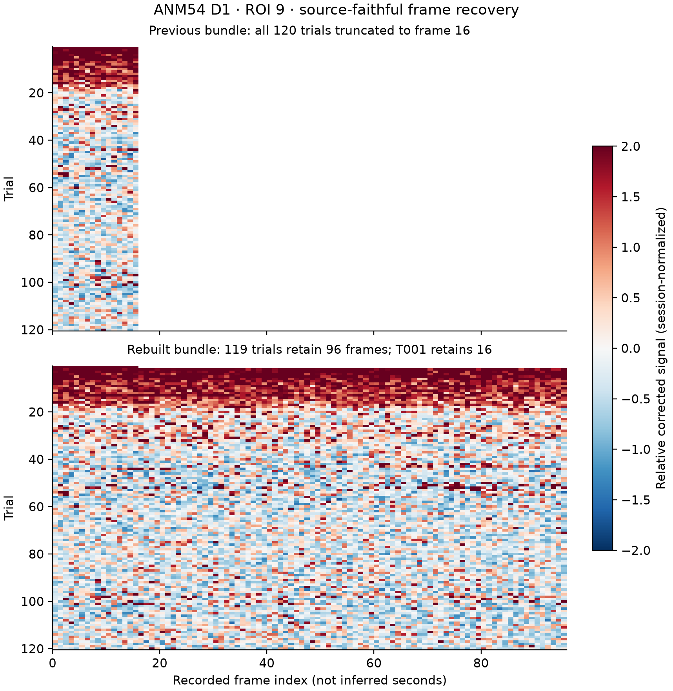

2P trial frames, clocks and condition provenance
Rebuilt source-faithful trial bundles for 21 sessions and 1,150 source trials, retaining an explicit per-trial frame-validity mask. The 954 ROI rows are cell × session observations, not 954 independent neurons.
Original valid trial-frame samples: 169,879; rescued from erroneous clipping: 9,520. Source-backed frame-time arrays exist for 517 trials, source-backed condition labels for 507, and both for 162.
Fixed ANM54 D1 truncation
ANM54 D1: T001 contains 16 frames; the remaining 119 trials each contain 96. The prior min-length reduction erased 119×80=9,520 valid trial-frame samples. Version 2 preserves 96-frame trials and explicitly masks T001 after frame 16 with NaNs, without interpolation or fabricated frames.

Open all 22 regenerated ANM54 D1 ROI panels
What experimental metadata actually supports
Cue256/Cue512, 100E/20E, 100E/100E+Q and 100E/50E are distinct experimental contrasts—not interchangeable ON/OFF states. Verified trial labels do not imply verified event timing. Frame-index comparisons must not be presented as event-aligned seconds.
| Session | Cells×day | Trials | Source frames | Clock | Condition | Labels | Provenance |
|---|---|---|---|---|---|---|---|
| 112_D1 | 150 | 5 | 87 | 0 | 0 | — | — |
| 113_D1 | 124 | 5 | 87 | 0 | 0 | — | — |
| 113_test5 | 124 | 1 | 87 | 0 | 0 | — | — |
| 181_D1 | 25 | 121 | 96 | 0 | 0 | — | — |
| 181_D2 | 19 | 150 | 96 | 0 | 0 | — | — |
| 181_D3 | 17 | 80 | 192 | 80 | 0 | — | — |
| 181_D4 | 18 | 52 | 192 | 52 | 0 | — | — |
| 181_D5 | 14 | 42 | 192 | 0 | 42 | 100E / 20E | 181_D5/TRIAL_CELL_ACTIVITY.csv / trial,condition |
| 181_D6 | 21 | 52 | 192 | 52 | 52 | 100E / 100E+Q | day19/day52_behavior_corrected.csv / cond100 |
| 181_D7 | 16 | 50 | 192 | 50 | 0 | — | — |
| 181_D8 | 12 | 63 | 192 | 0 | 63 | 100E / 50E | 181_D8/TRIAL_CELL_ACTIVITY.csv / trial,condition |
| 181_D9 | 16 | 34 | 192 | 34 | 0 | — | — |
| 185_D1 | 199 | 6 | 87 | 0 | 0 | — | — |
| 54_D1 | 22 | 120 | 16–96 | 0 | 120 | Cue256 / Cue512 | trace_trial_metadata.csv / cue_bit |
| 54_D2 | 26 | 120 | 96 | 0 | 120 | Cue256 / Cue512 | trace_trial_metadata.csv / cue_bit |
| 54_D3 | 27 | 71 | 192 | 71 | 0 | — | — |
| 54_D5 | 24 | 20 | 192 | 20 | 20 | 100E / 20E | 54_D5/TRIAL_CELL_ACTIVITY.csv / trial,condition |
| 54_D6 | 16 | 60 | 192 | 60 | 60 | 100E / 100E+Q | day19/day52_behavior_corrected.csv / cond100 |
| 54_D7 | 30 | 34 | 192 | 34 | 0 | — | — |
| 54_D8 | 29 | 30 | 192 | 30 | 30 | 100E / 50E | 54_D8/TRIAL_CELL_ACTIVITY.csv / trial,condition |
| 54_D9 | 25 | 34 | 192 | 34 | 0 | — | — |
Download session provenance CSV · QA JSON
Method comparisons use the same source movies and ROI masks; repairing frame length does not establish biological neutrality of background subtraction.